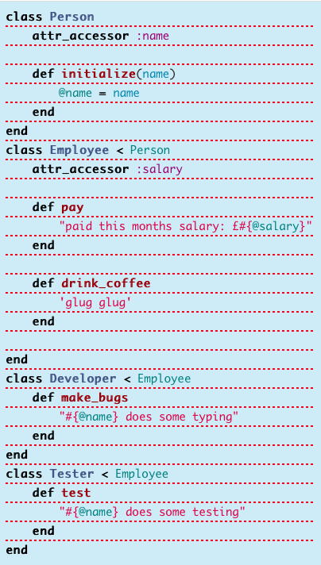
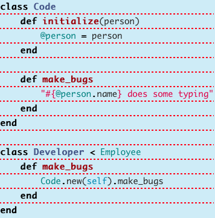

Design Patterns
There's a saying about how the great developers are lazy because they try to find the most efficient way of solving a problem. It's true. Many great developers are lazy because they don't like repetitive tasks and want to spend their time engaged in worthwhile problems. There's even a acronym for this: D.R.Y. aka Don't Repeat Yourself.
On Composition
Composition is different from inheritance in that Inheritance has a parent class that gives off attributes and behaviors to its children, whereas in composition you create ingredients/parts and a way that brings all those separate classes together as you call an instance of that class. Let's take a look at an example.
Reference from Sitepoint.  Here we create a Person grandparent class and a Employee parent class. Each child of Employee inherits from Employee depending upon their job. If you have many employees with different jobs, this will quickly become unmanageable. So what to do? Let's take a look at composition.  Composition is like a factory. You try to reduce the parts of code that is redundant and put it into the composition class. As you do so, you will quickly reduce the size of your children class.
One of the teachers at DevBootCamp explains when to use Inheritance or Composition succinctly:
- Use composition to package up code into modules that is used in many different unrelated places and situations. i.e."HAS A" relationship
- Use inheritance only when there are clearly related reusable pieces of code that fit under a single common concept, or if you have to because of something you're using. "IS A" relationship - inheritance